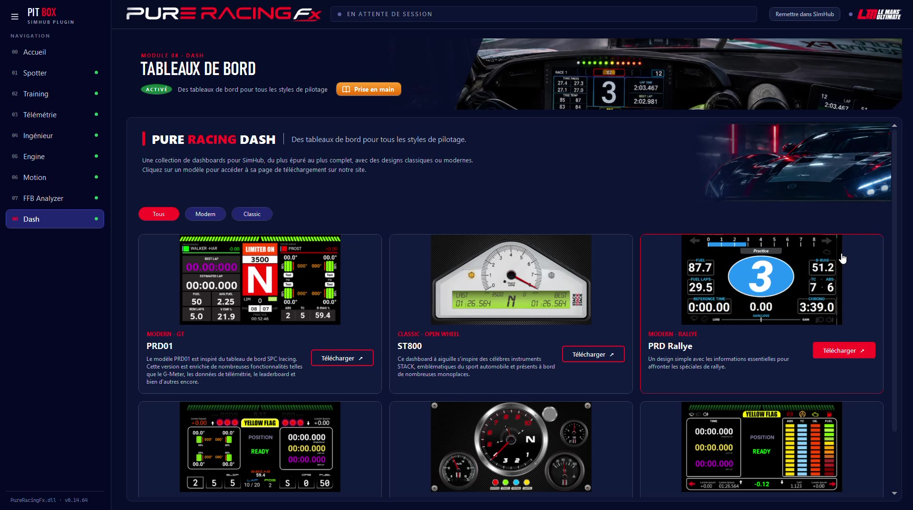

Une collection de tableaux de bord pour SimHub, du plus épuré au plus complet, avec des designs modernes ou classiques. Un clic sur un modèle, et tu le télécharges.
Les modèles sont rangés par style : tous, modernes ou classiques. Chaque carte mène à sa page de téléchargement.

| Point | Ce qu'il faut savoir |
|---|---|
| Installation | Télécharge le modèle, puis double-clique dessus : SimHub l'ajoute à tes tableaux de bord. |
| Écrans | Un écran de PC, un écran secondaire, une tablette ou un écran de volant reconnu par SimHub. |
| Assetto Corsa | Les autres voitures ne sont connues que si les applications Python sont activées dans le jeu. |
Les huit modules, la vidéo et l'installation.